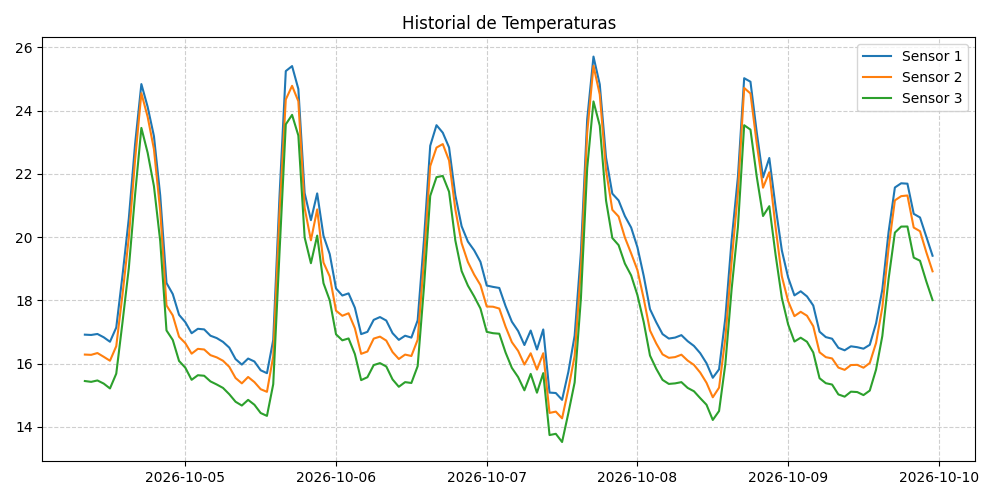
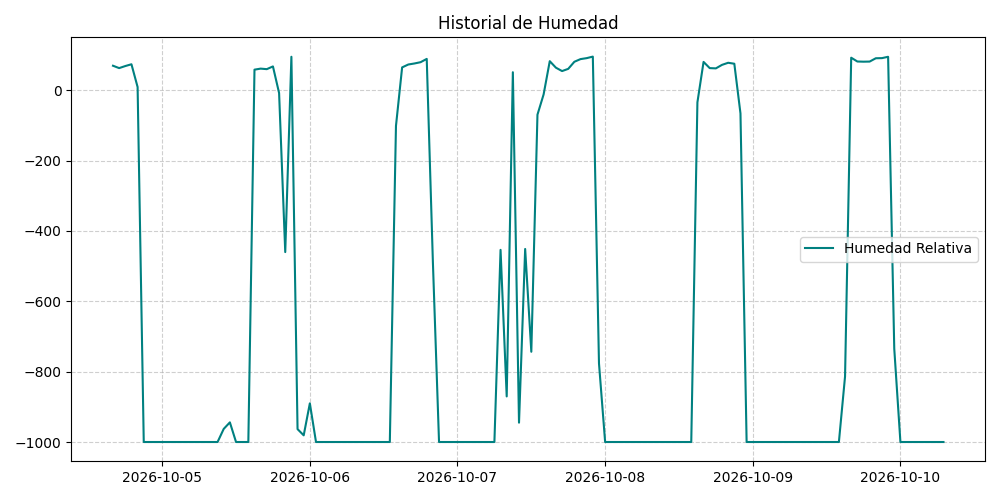

Última actualización: 2026-10-07 23:54:39 Estaciones: Zona Tláhuac - Chalco
Como analista de hardware IoT, he procesado el lote de datos proporcionado (que abarca los registros térmicos, barométricos y radiológicos). A continuación, presento el informe técnico:
Los picos máximos de radiación (visible, infrarroja y ultravioleta) ocurren de forma consistente en la franja vespertina debido a la posición solar en el periodo analizado: * Radiación Visible e Infrarroja (IR): El pico máximo se registra entre las 17:00 y las 18:00 UTC, destacando el 04 de octubre a las 17:00 UTC con 775.10 W/m² en luz visible y 6659.18 W/m² en radiación infrarroja. * Radiación UV: Alcanza su nivel máximo en la misma ventana horaria, registrando el valor tope de 2.77 UV el 04 de octubre a las 17:00 UTC.
Se han detectado anomalías críticas en la telemetría que evidencian fallas en los transductores:
* Sensor de Humedad (Falla Crítica / Rango Fuera de Escala): El sensor reporta constantemente valores negativos anómalos, principalmente -999.9 (un código de error estándar por pérdida de comunicación o lectura nula/NaN en firmware embebido), además de fluctuaciones erráticas como -817.69 y -622.29. Esto indica un colapso en el circuito del higrómetro o una falla en el bus de lectura de humedad relativa.
* Sensores de Temperatura (Discrepancia Térmica): Aunque los sensores 1, 2 y 3 operan bajo la misma tendencia, se observa un offset sistemático donde el temp_sensor3 siempre marca entre 1.5 °C y 2 °C por debajo del temp_sensor1. Esto sugiere un problema de calibración de fábrica o una degradación en la soldadura de la termorresistencia del sensor 3.

